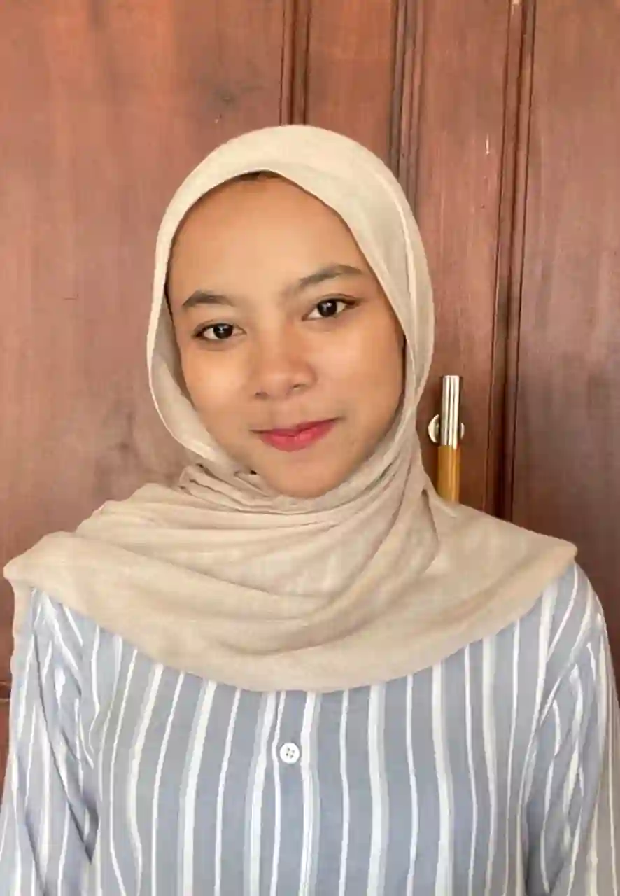

Di Balik Ekosistem Edukasi
Mengenal lebih dekat para pilar penting, pemimpin inovatif, dan tenaga pendidik berdedikasi yang terus menggerakkan roda kemajuan pendidikan di Kota Malang.
Dewan Pimpinan & Komite
Pilar penting pengambil kebijakan di balik ekosistem edukasi unggul Kota Malang

Dr. Anggunly S.H., S.Psi.
Kepala Dinas Pendidikan Kota Malang

Dr. Hawaaa M.Pd, S.Kom.
Ketua Komite Pendidikan Kota Malang

Prof. Dr. Indri S.Kom.
Pakar Kurikulum & Pendidikan Tinggi

Dr. Megameii S.H., M.Hum.
Ketua Komite Perwakilan Wali Murid
Pengajar Inspiratif
Mengenal sosok guru berprestasi yang membawa perubahan nyata di ruang kelas

Rachelia S.Pd., M.Si.
Guru Berprestasi Tingkat Nasional 2024Dikenal dengan metode pembelajarannya yang interaktif dan inovatif. Melalui pendekatan Problem Based Learning, beliau berhasil membawa puluhan siswa-siswi Kota Malang menjuarai olimpiade sains baik di tingkat regional maupun nasional. Baginya, setiap anak memiliki rasa ingin tahu yang hanya butuh difasilitasi.

Arinda M.Kom.
Inovator Kurikulum DigitalBerdedikasi dalam menciptakan ekosistem pembelajaran digital yang ramah anak. Beliau adalah otak di balik pengembangan aplikasi e-learning khusus untuk sekolah-sekolah di Malang pinggiran, memastikan tidak ada kesenjangan teknologi dalam mendapatkan akses pendidikan berkualitas.
Pesan & Pandangan
Filosofi pendidikan dari para pemikir dan pengajar
"Pendidikan bukan sekadar transfer ilmu pengetahuan dari guru ke murid, melainkan proses panjang membangun karakter, kemandirian, dan empati generasi muda."
"Di era digital, tantangan terbesar kita adalah bagaimana mempertahankan etika dan kearifan lokal di tengah arus informasi global yang tanpa batas."
"Setiap siswa memiliki rutenya masing-masing menuju kesuksesan. Tugas kita sebagai pendidik adalah menjadi kompas, bukan penentu arah akhir mereka."